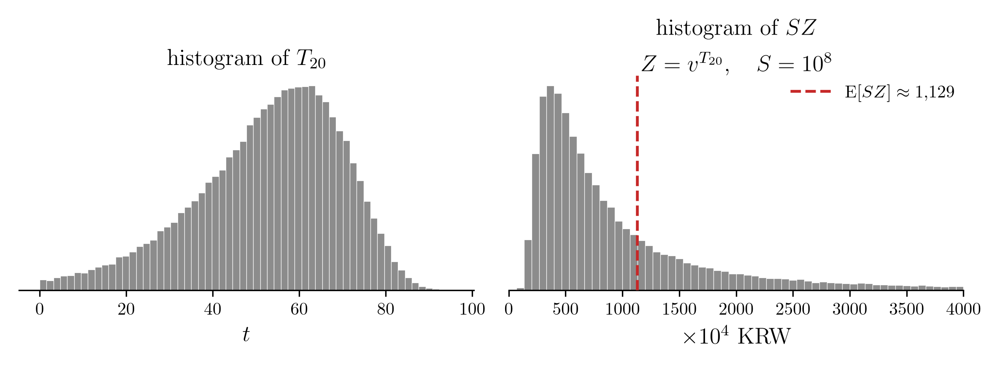
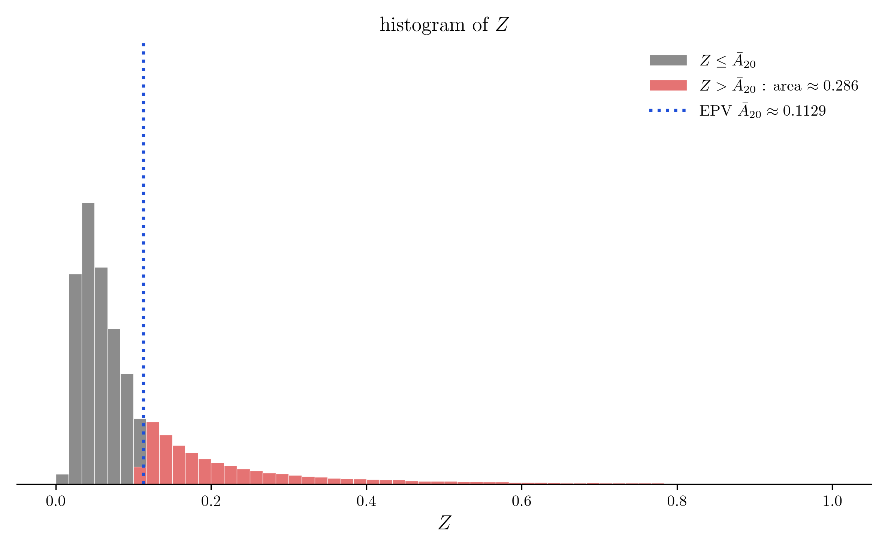
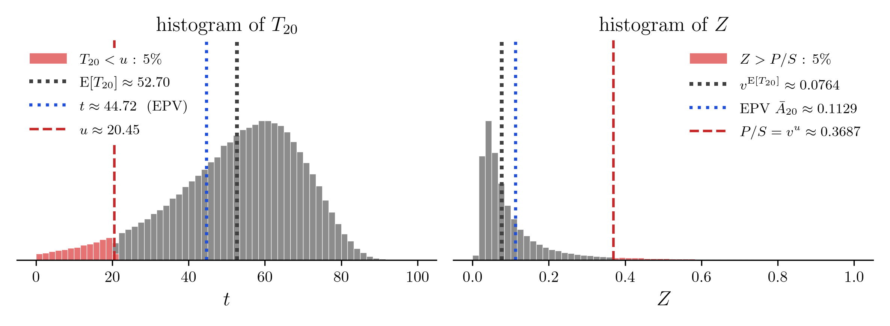

05wk-1: 보험급부 (2)
1. 강의영상
2. 보험료를 얼마로 받아야 하나? (2)
- “죽는 순간 보험금 \(S\) 를 주는 약속”의 지금 값을 \(SZ\) 라 하였다(\(Z = v^{T_x}\)). 그리고 그 평균 \(S\bar{A}_x\) 를 보험료로 받으면 회사의 손익이 평균적으로 0 임을 알게 되었다. 이 평균 \(\mathrm{E}[SZ] = S\bar{A}_x\) 를 기대현재가치(expected present value), 줄여서 EPV 라 부른다. 03wk-2 에서 손익분기점이라 부른 것이 이것이다.
- 그러나 「손익이 평균적으로 0 인 것」과 「망하지 않는 것」은 다른 말이었다.
- 퀴즈2 문제11: 남은 수명이 확률 0.5 로 2년, 0.5 로 30년인 사람 한 명에게 1억짜리 보험을 팔 때(\(i = 0.05\)) 두 가지 보험료의 비교
| 받은 보험료 | 망할 확률 | |
|---|---|---|
| \(10^8\,\mathrm{E}[Z] \approx 5{,}692\) 만원 (EPV) | \(0.5\) | 회사가 위험하다 |
| \(10^8 v^2 \approx 9{,}070\) 만원 | \(0\) | 30년을 살면 29,201만원이 남는다. (가입자에게 너무 비싸다) |
- 회사는 평균적으로 손익이 0 인 보험료와 절대 안 망하는 보험료 중 어떤 금액을 받아야 하는가? 평균적으로 손익이 0 인 보험료만 받는다면 보험금을 지급하지 못해 망할 것이다. 절대 안 망하는 보험료를 받는다면 가입자가 없어서 망할 것이다.
3. 가입자를 한 명만 받은 회사가 망할 확률
- 보험금이 \(S\) 원인 보험을 가입자 한 명에게 팔고 보험료 \(P\) 원을 받았다고 하자. 받은 \(P\) 는 \(T_x\) 년 뒤에 \(P(1+i)^{T_x}\) 가 되고 거기서 \(S\) 를 내준다. 따라서
\[ \text{잔고가 음수} \iff P(1+i)^{T_x} < S \iff P < S v^{T_x} = SZ \]
즉 가입자를 한 명만 받은 회사가 망할 확률은 \(\Pr[SZ > P]\) 다.
- \(Z\) 에 대한 확률은 \(T_x\) 에 대한 확률로 바꿔 구한다. \(P(1+i)^u = S\) 를 만족하는 \(u\) 를 잡으면
\[ \Pr[SZ > P] = \Pr[S v^{T_x} > S v^u] = \Pr[T_x < u] = 1 - S_x(u), \qquad u = \frac{\log(S/P)}{\log(1+i)} \]
- \(u\) 는 받은 \(P\) 가 불어나 딱 \(S\) 가 되는 데 걸리는 시간이다. 가입자가 그보다 일찍 죽으면 회사가 손해다. 그래서 \(u\)는 회사입장에서 “가입자가 적어도 이 정도는 살아 줬으면…” 하는 시간이다.
# 예제1 20세인 사람에게 죽는 순간 \(S = 10^8\) 원(1억)을 주는 보험을 판다. \(i = 0.05\) 이고, 남은 수명 \(T_{20}\) 의 생존함수는 아래와 같다.
\[S_{20}(t) = \exp\left\{-\frac{B}{\log c}\,c^{20}\left(c^t - 1\right)\right\}, \qquad B = 0.0003,\ c = 1.07\]
이 모형에서 EPV \(S\bar{A}_{20}\) 을 구하려면 어려운 적분값을 계산해야 한다. 여기서는 그 계산을 건너뛰고 컴퓨터로 구한 값을 쓴다. \(T_{20}\) 을 10만 번 뽑아 \(T_{20}\) 과 \(SZ\) 의 히스토그램을 그리고 \(SZ\) 의 평균을 구하면 약 \(1{,}128.5\) 만원이다(그림의 빨간 파선, 반올림해 1,129).

EPV 를 보험료로 받았다. \(P(1+i)^u = S\) 인 \(u\) 를 구하라.
EPV 를 보험료로 받았을 경우 회사가 망할 확률은 얼마인가.
(풀이)
- \(P = 1{,}128.5\) 만원, \(S = 10{,}000\) 만원이다.
\[ u = \frac{\log(S/P)}{\log(1+i)} = \frac{\log(1/\bar{A}_{20})}{\log(1+i)} = \frac{\log(10{,}000/1{,}128.5)}{\log 1.05} = 44.72 \ \text{년} \]
20세인 사람이 적어도 44.72년(64.72세까지)은 살아야 회사가 망하지 않는다(잔고가 음수가 되지 않는다).
- 미리 살펴본 식
\[ \Pr[SZ > P] = 1 - S_x(u), \qquad u = \frac{\log(S/P)}{\log(1+i)} \]
에 \(x = 20\) 과 (a) 의 \(u = 44.72\) 를 대입하면
\[ \Pr[SZ > P] = 1 - S_{20}(44.72) \]
이고, \(S_{20}(44.72)\) 는 생존함수에 \(t = 44.72\) 를 넣어 구한다.
\[ \begin{aligned} S_{20}(44.72) &= \exp\left\{-\frac{0.0003}{\log 1.07}\times 1.07^{20}\times\left(1.07^{44.72}-1\right)\right\} \\ &= \exp\left\{-0.004434 \times 3.8697 \times 19.602\right\} = \exp(-0.3363) = 0.7144 \end{aligned} \]
따라서 \(\Pr[SZ > P] = 1 - 0.7144 = 0.2856\) 이다.
해석해 보자. EPV 를 받았는데도 열 번에 세 번꼴로 망한다.

- 파란 점선의 값 \(\bar{A}_{20} = 0.1129\) 는 \(P/S\) 이고, \(Z\)의 평균값이다.
- 파란 점선의 값 \(\bar{A}_{20}\)는 히스토그램이 그리는 \(Z\)의 평균값이다. 따라서 파란 선을 기준(0)으로 놓고 히스토그램을 보면, 곧 \(Z - \bar{A}_{20}\) 을 보면 그 평균은 0 이다. 손익이 평균적으로 0 이라는 말이 이것이다.
- 그러나 파란 점선의 값 \(\bar{A}_{20}\)는 히스토그램이 그리는 \(Z\)의 중앙값이 아니다. 즉 파란 선을 기준(0)으로 놓고 히스토그램을 볼때, 오른쪽의 넓이는 전체의 \(50\%\) 가 아니라 약 \(28.56\%\) 다.
#
# 예제2 20세 한 사람만 받는데 망할 확률을 \(5\%\) 로 줄이고 싶다. 보험료를 얼마로 받아야 하는가(\(i = 0.05\), \(S = 10^8\)). 생존함수는 예제1 과 같다.
\[S_{20}(t) = \exp\left\{-\frac{B}{\log c}\,c^{20}\left(c^t - 1\right)\right\}, \qquad B = 0.0003,\ c = 1.07\]
(풀이)
망할 확률을 \(5\%\) 로 셋팅한다.
\[ \Pr[SZ > P] = 1 - S_{20}(u) = 0.05 \]
이제 \(S_{20}(u) = 0.95\) 인 \(u\) 를 찾는다.
\[ \begin{aligned} S_{20}(u) = 0.95 &\iff \exp\left\{-\frac{B}{\log c}\,c^{20}\left(c^u - 1\right)\right\} = 0.95 \\ &\iff \frac{B}{\log c}\,c^{20}\left(c^u - 1\right) = -\log 0.95 \\ &\iff c^u = 1 - \frac{\log c}{B c^{20}}\log 0.95 \\ &\iff u = \frac{1}{\log c}\log\left(1 - \frac{\log c}{B c^{20}}\log 0.95\right) \end{aligned} \]
\(B = 0.0003\), \(c = 1.07\) 을 넣으면
\[ u = \frac{1}{\log 1.07}\log\left(1 - \frac{\log 1.07}{0.0003 \times 1.07^{20}}\log 0.95\right) = 20.45 \ \text{년} \]
따라서
\[ P = S v^{u} = 10{,}000 \times 1.05^{-20.45} = 3{,}687 \ \text{만원} \]
해석해보자.

- 왼쪽은 \(T_{20}\), 오른쪽은 \(Z\) 의 히스토그램이다.
- 선은 세 쌍이다. 빨간 파선은 망할 확률을 \(5\%\) 로 맞춘 \(u \approx 20.45\) 와 그때의 보험료 \(P/S = v^u \approx 0.3687\) 이다. 파란 점선은 EPV \(\bar{A}_{20} \approx 0.1129\) 와 그에 대응하는 \(t \approx 44.72\) 다. 검은 점선은 03wk-2 에서 본 평균 수명 \(\mathrm{E}[T_{20}] \approx 52.70\) 과 \(v^{\mathrm{E}[T_{20}]} \approx 0.0764\) 로, 참고로 그렸다.
- 왼쪽 그림에서 \(T_{20} < u \approx 20.45\) 인 사람들은 40.45세 전에 죽는 사람들이며, 이 경우가 \(5\%\) 다.
- 오른쪽 그림에서 파란 점선 EPV \(\bar{A}_{20} \approx 0.1129\) 에 해당하는 보험료를 받으면 예제1 에서처럼 \(28.6\%\) 로 망한다. 이 파란 선을 오른쪽으로 밀어 빨간 선까지 가야 망할 확률이 \(5\%\) 가 된다. 그러다 보니 EPV(1,129만원)의 세 배가 넘는 가격까지 밀어야 한다.
- 20세가 40.45세 전에 죽는 \(5\%\) 의 경우까지 대비하려면 이만큼 받아야 한다. (그렇지만 너무 비싸서 아무도 가입하지 않을 것이다.)